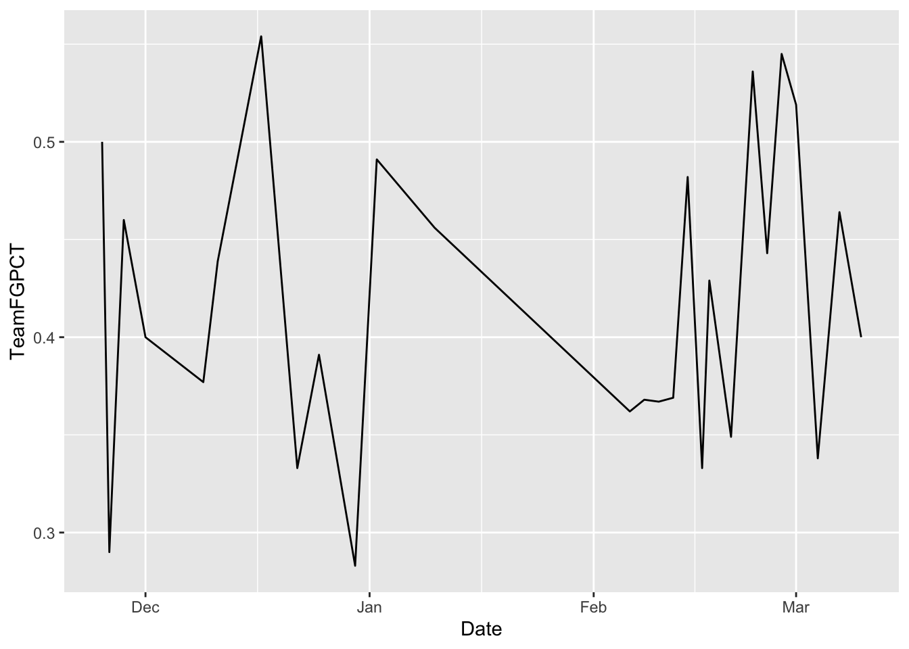
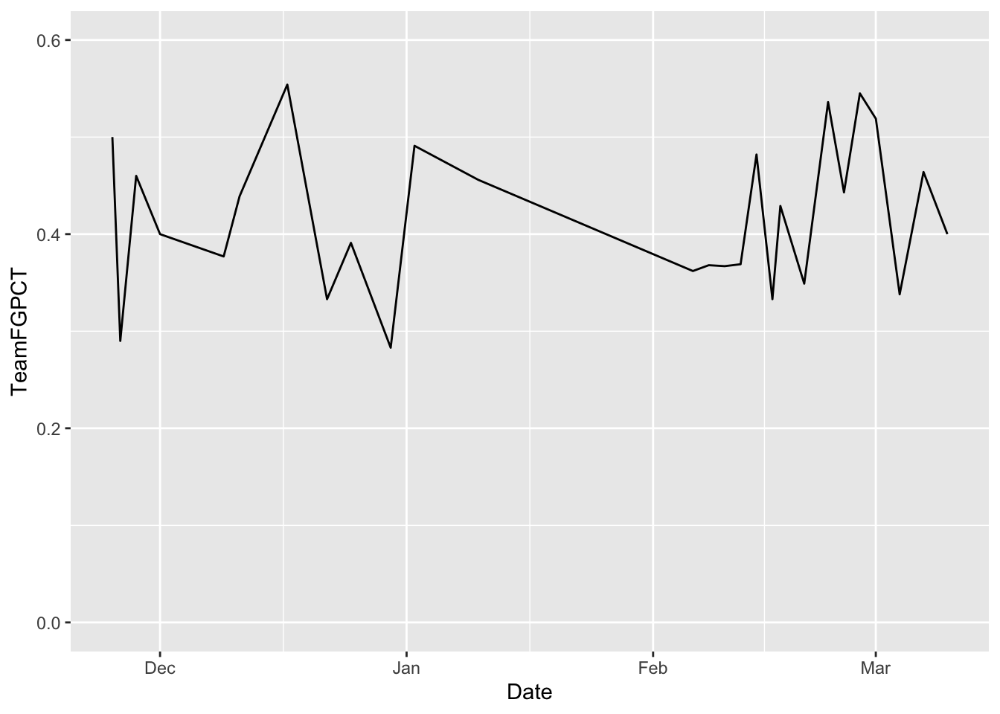
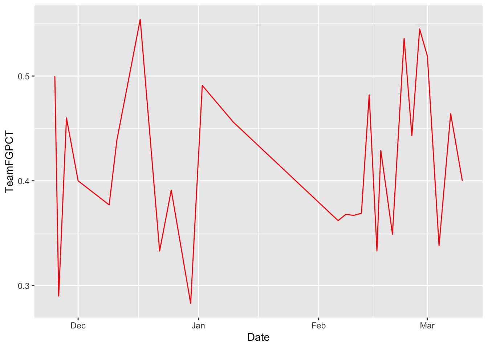
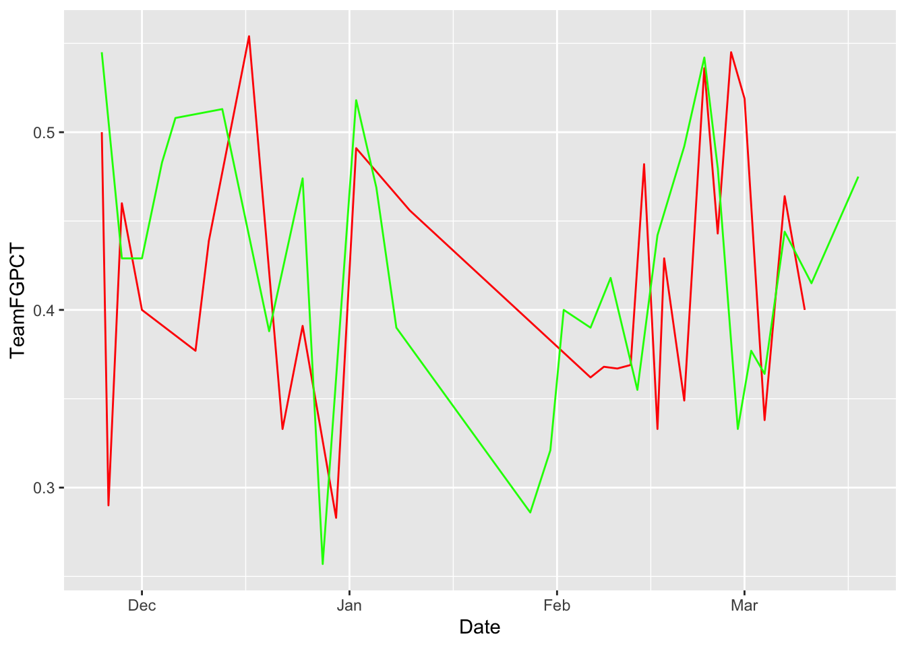
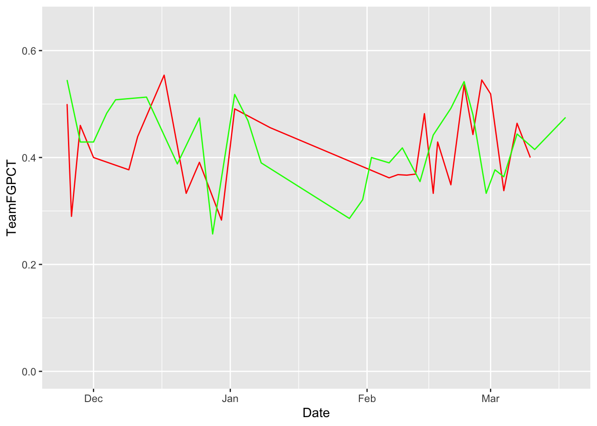
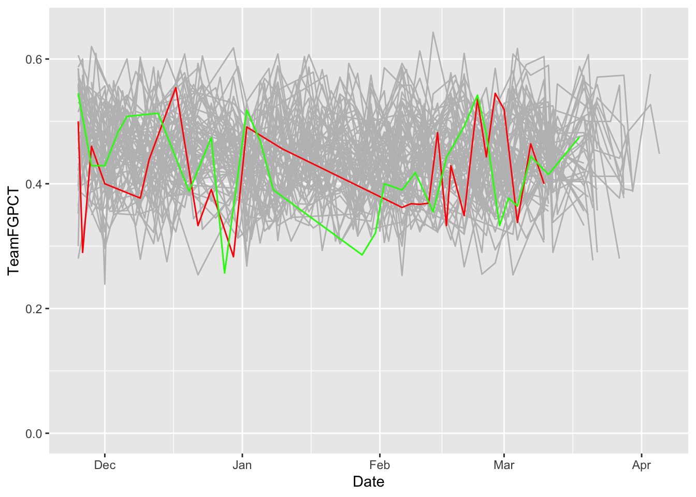
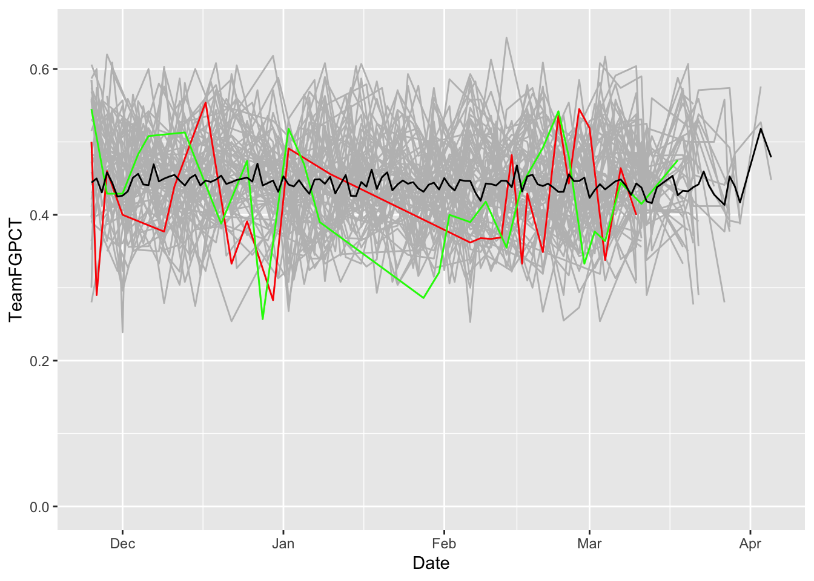

library(tidyverse)19 Line charts
So far, we’ve talked about bar charts – stacked or otherwise – are good for showing relative size of a thing compared to another thing. Stacked Bars and Waffle charts are good at showing proportions of a whole.
Line charts are good for showing change over time.
Let’s look at how we can answer this question: Why was Nebraska terrible at basketball last season?
We’ll need the logs of every game in college basketball for this.
For this walkthrough:
Let’s start getting all that we need. We can use the tidyverse shortcut.
And now load the data.
logs <- read_csv("data/logs21.csv")Rows: 8229 Columns: 48
── Column specification ────────────────────────────────────────────────────────
Delimiter: ","
chr (8): Season, TeamFull, Opponent, HomeAway, W_L, URL, Conference, Team
dbl (39): Game, TeamScore, OpponentScore, TeamFG, TeamFGA, TeamFGPCT, Team3...
date (1): Date
ℹ Use `spec()` to retrieve the full column specification for this data.
ℹ Specify the column types or set `show_col_types = FALSE` to quiet this message.This data has every game from every team in it, so we need to use filtering to limit it, because we just want to look at Nebraska. If you don’t remember, flip back to chapter 6.
nu <- logs %>% filter(Team == "Nebraska")Because this data has just Nebraska data in it, the dates are formatted correctly, and the data is long data (instead of wide), we have what we need to make line charts.
Line charts, unlike bar charts, do have a y-axis. So in our ggplot step, we have to define what our x and y axes are. In this case, the x axis is our Date – the most common x axis in line charts is going to be a date of some variety – and y in this case is up to us. We’ve seen from previous walkthroughs that how well a team shoots the ball has a lot to do with how well a team does in a season, so let’s chart that.
ggplot() + geom_line(data=nu, aes(x=Date, y=TeamFGPCT))
See some problems here? The first you’ll probably see is the long COVID pause the team had to take. The real problem, though is that the Y axis doesn’t start with zero. That makes this look more dramatic than it is. To make the axis what you want, you can use scale_x_continuous or scale_y_continuous and pass in a list with the bottom and top value you want. You do that like this:
ggplot() +
geom_line(data=nu, aes(x=Date, y=TeamFGPCT)) +
scale_y_continuous(limits = c(0, .6))
Note also that our X axis labels are automated. It knows it’s a date and it just labels it by month.
19.1 This is too simple.
With datasets, we want to invite comparison. So let’s answer the question visually. Let’s put two lines on the same chart. How does Nebraska compare to Michigan State, for example?
msu <- logs %>% filter(Team == "Michigan State")In this case, because we have two different datasets, we’re going to put everything in the geom instead of the ggplot step. We also have to explicitly state what dataset we’re using by saying data= in the geom step.
First, let’s chart Nebraska. Read carefully. First we set the data. Then we set our aesthetic. Unlike bars, we need an X and a Y variable. In this case, our X is the date of the game, Y is the thing we want the lines to move with. In this case, the Team Field Goal Percentage – TeamFGPCT.
ggplot() + geom_line(data=nu, aes(x=Date, y=TeamFGPCT), color="red")
Now, by using +, we can add Michigan State to it. REMEMBER COPY AND PASTE IS A THING. Nothing changes except what data you are using.
ggplot() +
geom_line(data=nu, aes(x=Date, y=TeamFGPCT), color="red") +
geom_line(data=msu, aes(x=Date, y=TeamFGPCT), color="green")
Let’s flatten our lines out by zeroing the Y axis.
ggplot() +
geom_line(data=nu, aes(x=Date, y=TeamFGPCT), color="red") +
geom_line(data=msu, aes(x=Date, y=TeamFGPCT), color="green") +
scale_y_continuous(limits = c(0, .65))
So visually speaking, the difference between Nebraska and Michigan State’s season is that Michigan State stayed mostly on an even keel, and Nebraska went on a two month swoon.
19.2 But what if I wanted to add a lot of lines.
Fine. How about all Power Five Schools? This data for example purposes. You don’t have to do it.
powerfive <- c("SEC", "Big Ten", "Pac-12", "Big 12", "ACC")
p5conf <- logs %>% filter(Conference %in% powerfive)I can keep layering on layers all day if I want. And if my dataset has more than one team in it, I need to use the group command. And, the layering comes in order – so if you’re going to layer a bunch of lines with a smaller group of lines, you want the bunch on the bottom. So to do that, your code stacks from the bottom. The first geom in the code gets rendered first. The second gets layered on top of that. The third gets layered on that and so on.
ggplot() +
geom_line(data=p5conf, aes(x=Date, y=TeamFGPCT, group=Team), color="grey") +
geom_line(data=nu, aes(x=Date, y=TeamFGPCT), color="red") +
geom_line(data=msu, aes(x=Date, y=TeamFGPCT), color="green") +
scale_y_continuous(limits = c(0, .65))
What do we see here? How has Nebraska and Michigan State’s season evolved against all the rest of the teams in college basketball?
But how does that compare to the average? We can add that pretty easily by creating a new dataframe with it and add another geom_line.
average <- logs %>% group_by(Date) %>% summarise(mean_shooting=mean(TeamFGPCT))ggplot() +
geom_line(data=p5conf, aes(x=Date, y=TeamFGPCT, group=Team), color="grey") +
geom_line(data=nu, aes(x=Date, y=TeamFGPCT), color="red") +
geom_line(data=msu, aes(x=Date, y=TeamFGPCT), color="green") +
geom_line(data=average, aes(x=Date, y=mean_shooting), color="black") +
scale_y_continuous(limits = c(0, .65))